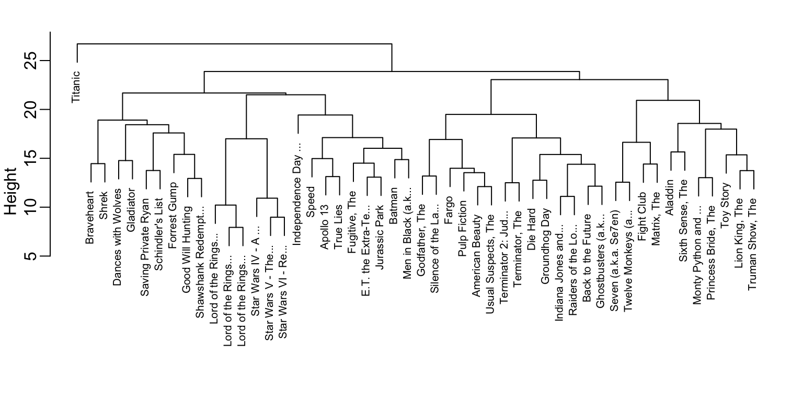

library(dslabs)
library(data.table)
library(stringr)
dt <- as.data.table(movielens)
dt <- dt[, if (.N >= 100) .SD, by = userId]
top_movies <- dt[, .N, by = .(movieId, title)]
dt <- dt[movieId %in% top_movies[order(-N)][1:50, movieId]]
dt <- dcast(dt, title ~ userId, value.var = "rating")
y <- as.matrix(dt[,-1])
rownames(y) <- str_remove(dt$title, ": Episode") |> str_trunc(20)32 Clustering
The algorithms we have described so far are examples of a general approach referred to as supervised machine learning. The term supervised comes from the fact that the outcomes in the training set are used to supervise the construction of a prediction algorithm.
In contrast, there is another branch of machine learning known as unsupervised learning. In this setting, the outcomes are not provided, and the goal is instead to uncover structure in the data, often in the form of groups. These methods are also referred to as clustering algorithms because they group observations into clusters based on similarities in their predictors.
In the two examples we have considered so far, clustering would not be very effective. For example, given only heights, we would not expect an algorithm to cleanly discover two groups (male and female) because the overlap is substantial. Similarly, in the digit classification example, the distributions of twos and sevens overlap enough to make clustering challenging.
However, there are many applications in which unsupervised learning is a powerful tool, particularly for exploratory data analysis. For example, clustering can reveal hidden subgroups in biological, social, or market data that may not be obvious at first glance.
A first step in any clustering algorithm is defining a distance (or similarity) between observations or groups of observations. Once a distance is defined, the next step is to decide how to join observations into clusters. There are many algorithms for doing this. In this chapter, we introduce two common approaches: hierarchical clustering and k-means clustering.
A first step in any clustering algorithm is defining a distance between observations or groups of observations. Then we need to decide how to join observations into clusters. There are many algorithms for doing this. Here we introduce two as examples: hierarchical and k-means.
We startin by constructing a simple example based on movie ratings. Here we quickly construct a matrix y that has ratings for the 50 movies with the most ratings among users with at least 100 ratings:
Notice that if we compute distances directly from the original ratings, movies with generally high ratings will tend to be close to each other, as will movies with generally low ratings. However, this is not what we are actually interested in. Instead, we want to capture how ratings correlate across users for the 263 different users. To achieve this, we center the ratings for each movie by removing the movie effect:
y <- y - rowMeans(y, na.rm = TRUE)As described in Chapter 24, many of the entries are missing because not every user rates every movie, so we use the argument na.rm = TRUE.
With the centered data, we can now cluster movies based on their rating patterns. The first step is to compute distances between each pair of movies using the dist function:
d <- dist(y)The dist function automatically accounts for missing values and standardizes the distance measurements, ensuring that the computed distance between two movies does not depend on the number of ratings available.
32.1 Hierarchical clustering
With the distance between each pair of movies computed, we need an algorithm to define groups, based on these distances. Hierarchical clustering starts by defining each observation as a separate group, then the two closest groups are joined into new groups. We then continue joining the closest groups into new groups iteratively until there is just one group including all the observations. The hclust function implements this algorithm and takes a distance as input.
h <- hclust(d)We can see the resulting groups using a dendrogram. The function plot applied to an hclust object creates a dendrogram:
plot(h, cex = 0.65, main = "", xlab = "")
This graph gives us an approximation between the distance between any two movies. To find this distance, we find the first location, from top to bottom, where these movies split into two different groups. The height of this location is the distance between these two groups. So, for example, the distance between the three Star Wars movies is 8 or less, while the distance between Raiders of the Lost of Ark and Silence of the Lambs is about 17.
To generate actual groups, we can do one of two things: 1) decide on a minimum distance needed for observations to be in the same group or 2) decide on the number of groups you want and then find the minimum distance that achieves this. The function cutree can be applied to the output of hclust to perform either of these two operations and generate groups.
groups <- cutree(h, k = 10)Note that the clustering provides some insights into types of movies. Group 2 appears to be critically aclaimed movies:
names(groups)[groups == 2]
#> [1] "American Beauty" "Fargo" "Godfather, The"
#> [4] "Pulp Fiction" "Silence of the La..." "Usual Suspects, The"And Group 9 appears to be nerd movies:
names(groups)[groups == 9]
#> [1] "Lord of the Rings..." "Lord of the Rings..." "Lord of the Rings..."
#> [4] "Star Wars IV - A ..." "Star Wars V - The..." "Star Wars VI - Re..."We can change the size of the group by either making k larger or h smaller.
32.2 Heatmaps
A powerful visualization tool for discovering clusters or patterns in your data is the heatmap. The idea is simple: plot an image of your data matrix with colors used as the visual cue and both the columns and rows ordered according to the results of a clustering algorithm. We will demonstrate this with the tissue_gene_expression dataset in dslabs.
We start by scaling the columns of the gene expression matrix because we care about relative differences in gene expression. After scaling, we compute perform clustering on both the observations and the predictors:
Note that we have performed two clusterings: we clustered samples (h_1) and genes (h_2).
Now we can use the results of this clustering to order the rows and columns:
image(y[h_1$order, h_2$order])The heatmap function that does all this for us:
heatmap(y, col = RColorBrewer::brewer.pal(11, "Spectral"))Note we do not show the results of the heatmap function because there are too many features for the plot to be useful. We will therefore filter some columns and remake the plots.
If only a few features are different between clusters, including all the features can add enough noise that making cluster detection challenging. A simple approach to avoid this is to assume low variability features are not informative and include only high variance features. For example, in the movie example, users with low variance in their ratings are not really distinguishing movies: all the movies seem about the same to them.
Here is an example code showing how we can include only the features with high variance in a heatmap:
library(matrixStats)
sds <- colSds(y, na.rm = TRUE)
o <- order(sds, decreasing = TRUE)[1:25]
heatmap(y[,o], col = RColorBrewer::brewer.pal(11, "Spectral"))
Note there are several other heatmap functions in R. A popular example is the heatmap.2 in the gplots package.
32.3 k-means
We have so far described just one clustering algorithm: hierarchical clustering. However, there are many others that take quite different approaches. To demonstrate another, we now introduce the k-means clustering algorithm.
The k-means algorithm requires us to predefine $k$, the number of clusters we want to create. Once $k$ is set, the algorithm proceeds iteratively:
- Initialization: Define \(k\) centers (chosen at random).
- Assignment step: Each observation is assigned to the cluster with the closest center.
- Update step: The centers are redefined by taking the mean of the observations in each cluster. These new centers are called centroids.
- Iteration: Steps 2 and 3 are repeated until the centers stabilize (converge).
We can run k-means to see if it can discover the different tissues:
The cluster assignments are stored in the cluster component:
k$cluster[1:5]
#> cerebellum_1 cerebellum_2 cerebellum_3 cerebellum_4 cerebellum_5
#> 7 7 7 7 7Because the initial centers are chosen at random (hence the use of set.seed), the resulting clusters can vary. To improve stability, we can repeat the process multiple times with different random starting points and keep the best result. The number of random starts is set with the nstart argument:
k <- kmeans(y, centers = 7, nstart = 100)We can evaluate how well the clusters match the known tissue labels:
table(tissue_gene_expression$y, k$cluster)
#>
#> 1 2 3 4 5 6 7
#> cerebellum 33 0 0 0 0 5 0
#> colon 0 34 0 0 0 0 0
#> endometrium 0 0 0 15 0 0 0
#> hippocampus 0 0 0 0 0 31 0
#> kidney 0 1 0 0 38 0 0
#> liver 0 0 26 0 0 0 0
#> placenta 0 0 0 0 0 0 6The results show that k-means did a reasonably good job at recovering the tissue groups. For example, clusters 1, 3, 4, 5, and 7 correspond to cerebellum, liver, endometrium, kidney, and placenta, respectively. All hippocampus samples are grouped in cluster 6, though five cerebellum samples are incorrectly included there. Cluster 2 captures almost all colon samples, with just one kidney misclassified.
32.4 Exercises
1. Load the tissue_gene_expression dataset. Remove the row means and compute the distance between each observation. Store the result in d.
2. Make a hierarchical clustering plot and add the tissue types as labels.
3. Run a k-means clustering on the data with \(K=7\). Make a table comparing the identified clusters to the actual tissue types. Run the algorithm several times to see how the answer changes.
4. Make a heatmap of the 50 most variable genes. Make sure the observations show up in the columns, that the predictors are centered, and add a color bar to show the different tissue types. Hint: use the ColSideColors argument to assign colors. Also, use col = RColorBrewer::brewer.pal(11, "RdBu") for a better use of colors.